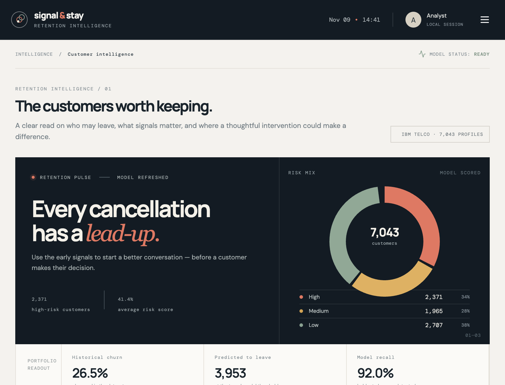

Machine Learning | Predictive Analytics | AI Applications
01

PRODUCT OVERVIEW / SIGNAL & STAYSignal & Stay — Customer Churn Intelligence
An end-to-end customer churn intelligence workspace built around the IBM Telco Customer Churn dataset. It combines a recall-oriented model benchmark, out-of-sample risk scores, an explainable prediction API, and a responsive retention analytics interface.
Python
Scikit-learn
XGBoost
FastAPI
React
TypeScript
- Executive churn analytics overview
- Customer risk segmentation
- Explainable churn predictions
- Retention cohort analysis
Explore the project workflow
- Dataset & preprocessingIBM Telco Customer Churn data; handle missing values, review field types, and prepare categorical inputs.
- Feature engineeringCustomer and service attributes are shaped into model-ready features.
- ModelingLogistic Regression, Random Forest, and XGBoost candidate models.
- Cross-validationCompare candidate models across validation folds.
- EvaluationAssess model behavior on held-out data; no metric values are shown without saved evaluation artifacts.
- Churn predictionsProduce customer risk predictions for retention review.
Feature importance & explainability
Feature-level importance and customer-level explanation support review of churn risk. Visual evidence is shown only when the corresponding saved project artifacts are available.
Saved evaluation charts
Checking saved evaluation charts…